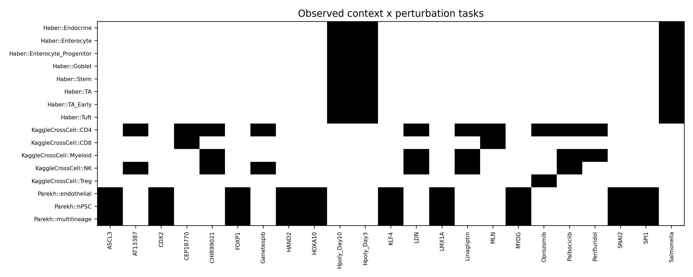
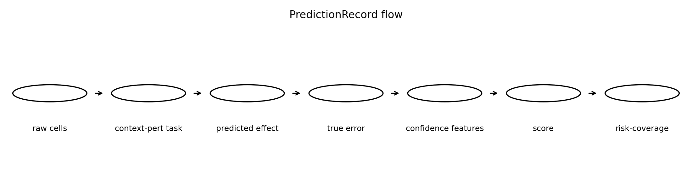
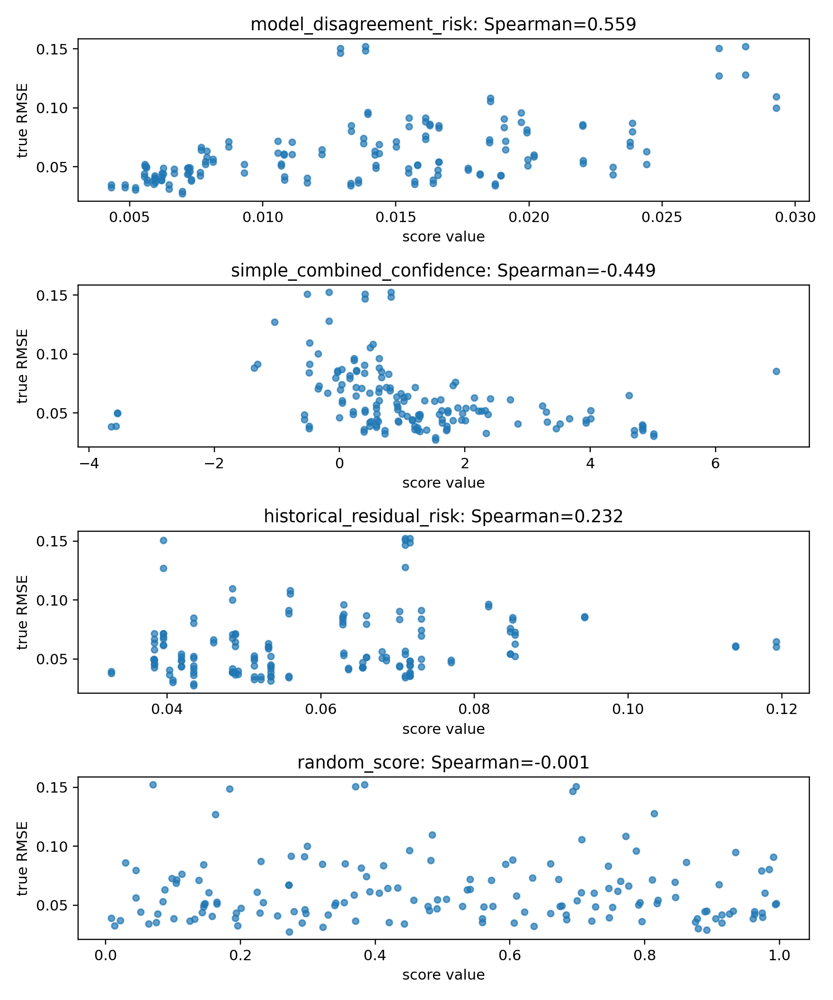
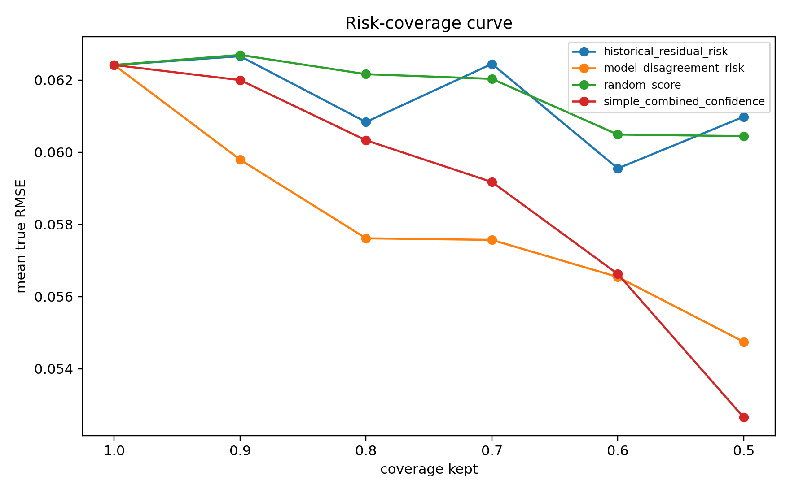
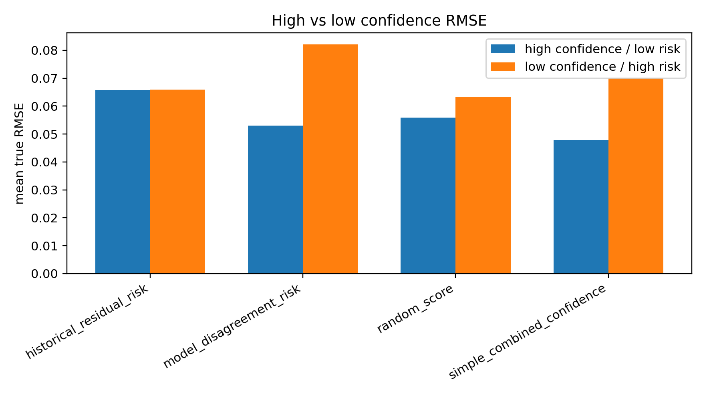
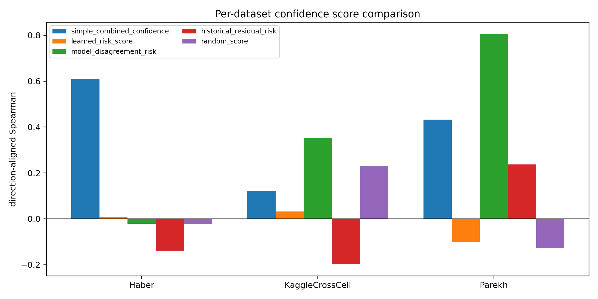
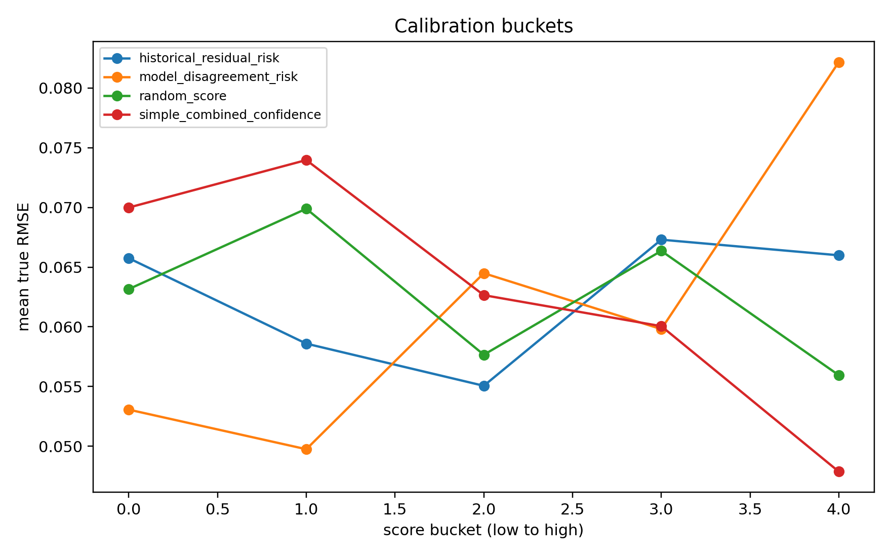
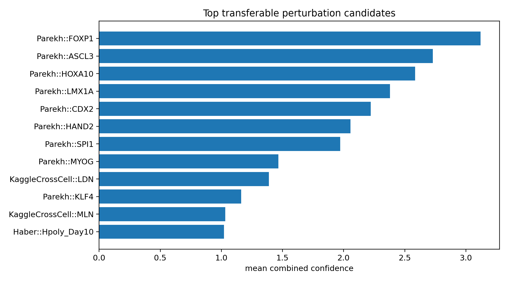

E10 外部任务级验证探针
本次先确认外部数据能否进入 SafeConf 的任务级风险审计闭环。当前结论：管线跑通，disagreement 信号强，组合分数在部分外部数据上需要重查。
外部任务数
78
测试任务数
77
最强 overall rho
0.559
80% coverage 改善
7.96%
Gate
9 PASS / 2 FAIL
1. 数据与任务
| dataset | n_tasks | n_contexts | n_perturbations | context_col | perturbation_col | n_genes |
|---|---|---|---|---|---|---|
| KaggleCrossCell | 24 | 5 | 10 | cell_type | perturbation | 5000 |
| Haber | 24 | 8 | 3 | cell_type | perturbation | 5000 |
| Parekh | 30 | 3 | 10 | cell_type | perturbation | 5000 |
2. 每数据集主结果
| dataset_name | simple_combined_confidence_aligned_rho | simple_combined_confidence_risk_cov_80_improve_pct | learned_risk_score_aligned_rho | learned_risk_score_risk_cov_80_improve_pct | model_disagreement_risk_aligned_rho | model_disagreement_risk_risk_cov_80_improve_pct |
|---|---|---|---|---|---|---|
| KaggleCrossCell | 0.120823 | -0.553202 | 0.031304 | -4.456773 | 0.353435 | 12.856780 |
| Haber | 0.610603 | 5.099051 | 0.008673 | 1.290792 | -0.021942 | -1.691497 |
| Parekh | 0.432328 | 6.472721 | -0.099686 | -6.062514 | 0.806438 | 12.723002 |
3. 每数据集最强单项信号
| dataset_name | score_name | score_type | n | direction_aligned_spearman | risk_cov_80_improve_pct | high_low_rmse_gap |
|---|---|---|---|---|---|---|
| Haber | context_similarity_score | confidence | 48 | 0.681732 | 3.635814 | 0.031331 |
| KaggleCrossCell | model_disagreement_risk | risk | 46 | 0.353435 | 12.856780 | 0.053145 |
| Parekh | model_disagreement_risk | risk | 60 | 0.806438 | 12.723002 | 0.038338 |
4. 失败边界
KaggleCrossCell 上 simple combined 只有 0.121；learned risk 没有超过 model disagreement；外部数据中 perturbation stability 有明显缺失。这三点不能藏，要在下一轮实验里正面处理。
5. 图件








